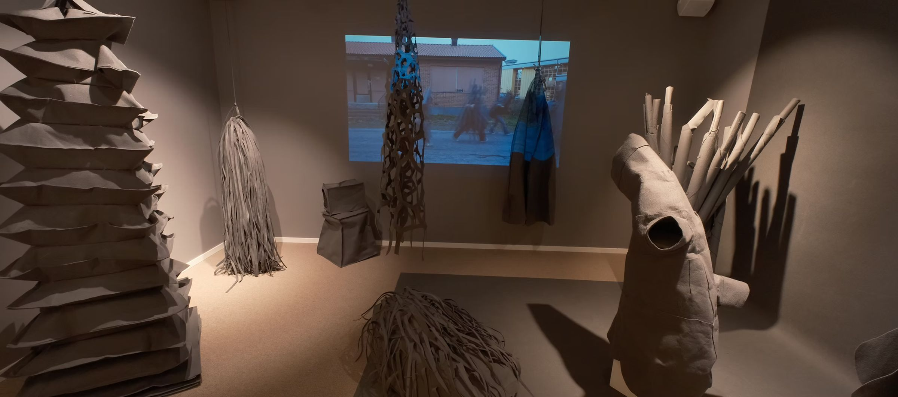

<meta charset="utf-8">
<title>Paraden handritad</title>
<meta name="claude:viewport-fit-sides" content="cover">
<meta name="description" content="PARADEN är ett deltagarbaserat konstverk i mötet mellan kropp, skulptur och koreografi.">
<link rel="preconnect" href="https://fonts.googleapis.com">
<link rel="preconnect" href="https://fonts.gstatic.com" crossorigin>
<link rel="stylesheet" href="https://fonts.googleapis.com/css2?family=Shadows+Into+Light+Two&family=Montserrat:wght@400;500;700;800;900&display=swap">
<style>
/* Layout: fullbreda band som växlar mellan natt (bild, procession, galleri) och papper (text, karta); innehåll i en wrap på max 1240px. */
:root {
  --paper: #e6e5e1;
  --paper-2: #d8d7d2;
  --ink: #151515;
  --graphite: #3b3a38;
  --mute: #8e8c87;
  --night: #141313;
  --felt: #262223;
  --chalk: #f2f1ed;
  --display: "Montserrat", "Gotham", "Helvetica Neue", Arial, sans-serif;
  --mono: "Shadows Into Light Two", "Segoe Print", "Bradley Hand", cursive;
  --ease: cubic-bezier(.7, 0, .2, 1);
  --gutter-l: max(clamp(16px, 4vw, 48px), env(safe-area-inset-left, 0px));
  --gutter-r: max(clamp(16px, 4vw, 48px), env(safe-area-inset-right, 0px));
}
html { background: var(--night); }
body {
  background: var(--paper);
  color: var(--ink);
  font-family: var(--display);
  font-size: 16px;
  line-height: 1.6;
  overflow-x: hidden;
  -webkit-font-smoothing: antialiased;
}
/* Papperskorn över hela sidan */
body::after {
  content: "";
  position: fixed;
  inset: 0;
  pointer-events: none;
  z-index: 50;
  opacity: .08;
  mix-blend-mode: multiply;
  background-image: url("data:image/svg+xml,%3Csvg xmlns='http://www.w3.org/2000/svg' width='220' height='220'%3E%3Cfilter id='n'%3E%3CfeTurbulence type='fractalNoise' baseFrequency='.85' numOctaves='3' stitchTiles='stitch'/%3E%3CfeColorMatrix values='0 0 0 0 0 0 0 0 0 0 0 0 0 0 0 0 0 0 1 0'/%3E%3C/filter%3E%3Crect width='220' height='220' filter='url(%23n)'/%3E%3C/svg%3E");
}
.sr-only { position: absolute; width: 1px; height: 1px; overflow: hidden; clip: rect(0 0 0 0); white-space: nowrap; }
.wrap {
  max-width: 1240px;
  margin-inline: auto;
  padding-left: var(--gutter-l);
  padding-right: var(--gutter-r);
}
.eyebrow {
  margin: 0;
  font: 500 12px/1.4 var(--mono);
  letter-spacing: .18em;
  text-transform: uppercase;
  color: var(--mute);
}
:focus-visible { outline: 2px solid currentColor; outline-offset: 4px; }

/* ---------- Hero ---------- */
.hero {
  position: relative;
  height: 100svh;
  min-height: 520px;
  overflow: hidden;
  background: var(--night);
  color: var(--chalk);
  isolation: isolate;
}
.hero__media { position: absolute; inset: -4% 0 0; z-index: -2; }
.hero__media img {
  width: 100%;
  height: 100%;
  max-width: none;
  object-fit: cover;
  object-position: 50% 60%;
  filter: grayscale(.9) contrast(1.06) brightness(.82);
  transform: scale(1.06);
  will-change: transform;
}
.hero__shade {
  position: absolute; inset: 0; z-index: -1;
  background:
    linear-gradient(to bottom, rgba(12,12,12,.62) 0%, rgba(12,12,12,.12) 42%, rgba(12,12,12,.1) 65%, rgba(12,12,12,.7) 100%);
}
.hero__inner {
  padding-top: clamp(28px, 6vh, 72px);
  display: grid;
  gap: clamp(18px, 3vh, 32px);
  justify-items: center;
  will-change: transform, opacity;
}
.hero__title { margin: 0; width: min(94vw, 1380px); line-height: 0; }
.paint { width: 100%; height: auto; overflow: visible; }
/* Rubriken: handskriven, ritas som blyertskontur och fylls sedan */
.paint text.hw {
  font-family: var(--mono);
  font-size: 200px;
  letter-spacing: .04em;
  fill: var(--chalk);
  stroke: var(--chalk);
  stroke-width: 2.4;
  stroke-linejoin: round;
}
.anim .paint tspan { fill-opacity: 0; stroke-dasharray: 3200; stroke-dashoffset: 3200; }
.anim .paint.go tspan {
  fill-opacity: 1;
  stroke-dashoffset: 0;
  transition: stroke-dashoffset var(--t) cubic-bezier(.5, 0, .3, 1) var(--dl), fill-opacity .6s ease calc(var(--dl) + var(--t) - .2s);
}
.hero__kicker {
  margin: 0;
  font: 500 12px/1 var(--mono);
  letter-spacing: .32em;
  text-transform: uppercase;
  opacity: 0;
  transform: translateY(8px);
  transition: opacity 1s ease 2.5s, transform 1s ease 2.5s;
}
.go-kicker .hero__kicker { opacity: .85; transform: none; }
.hero__cue {
  position: absolute;
  left: 50%;
  bottom: calc(24px + env(safe-area-inset-bottom, 0px));
  translate: -50% 0;
  display: grid;
  justify-items: center;
  gap: 10px;
  color: var(--chalk);
  text-decoration: none;
  font: 500 11px/1 var(--mono);
  letter-spacing: .3em;
  text-transform: uppercase;
  opacity: .8;
}
.hero__cue::after {
  content: "";
  width: 1px;
  height: 46px;
  background: linear-gradient(var(--chalk), transparent);
  transform-origin: top;
  animation: cue 2.2s var(--ease) infinite;
}
@keyframes cue { 0% { transform: scaleY(0); } 50% { transform: scaleY(1); } 100% { transform: scaleY(1); opacity: 0; } }

/* ---------- Om + manifest ---------- */
.manifest {
  position: relative;
  overflow: hidden;
  padding-block: clamp(80px, 14vh, 160px);
}
/* Rad med illustrationer av paraddräkterna, svaga i bakgrunden */
.ghost {
  position: absolute;
  top: 8%;
  left: 0;
  display: flex;
  align-items: flex-end;
  gap: clamp(32px, 6vw, 110px);
  pointer-events: none;
  opacity: .14;
  will-change: transform;
}
.ghost img {
  height: clamp(260px, 60vh, 600px);
  width: auto;
  max-width: none;
  flex: none;
}
.ghost img:nth-child(even) { margin-bottom: 6vh; }
.manifest__grid {
  position: relative;
  display: grid;
  grid-template-columns: minmax(0, 4fr) minmax(0, 7fr);
  gap: clamp(40px, 7vw, 110px);
  align-items: start;
}
.manifest__intro { display: grid; gap: 22px; position: sticky; top: 15vh; }
.lede {
  margin: 0;
  font-size: clamp(1.15rem, 1.6vw, 1.4rem);
  line-height: 1.5;
  font-weight: 500;
  max-width: 30ch;
  text-wrap: pretty;
}
.lede strong { font-weight: 800; letter-spacing: .04em; }
.rule { position: relative; width: 64px; height: 8px; }
.manifest__text { display: grid; gap: 26px; min-width: 0; }
.mani {
  margin: 0;
  font-weight: 800;
  font-size: clamp(1.45rem, 3.1vw, 2.75rem);
  line-height: 1.14;
  letter-spacing: -.005em;
  text-transform: uppercase;
}
.mani span { color: #a3a19c; transition: color .7s ease; }
.mani span.lit { color: var(--ink); }
.mani-end {
  margin: 0;
  font-weight: 900;
  font-size: clamp(2.4rem, 7vw, 6.4rem);
  line-height: .95;
  letter-spacing: -.02em;
  text-transform: uppercase;
}
.mani-end span { display: inline-block; color: #a3a19c; transition: color .8s ease, transform .8s var(--ease); transform: translateY(.12em); }
.mani-end.lit span { color: var(--ink); transform: none; }

/* ---------- Procession ---------- */
.procession {
  position: relative;
  overflow: hidden;
  background: var(--felt);
  color: var(--chalk);
  padding-block: clamp(56px, 10vh, 110px) clamp(40px, 7vh, 80px);
}
.procession__ghost {
  position: absolute;
  top: 50%;
  left: 0;
  translate: 0 -50%;
  white-space: nowrap;
  pointer-events: none;
  font: 900 clamp(4rem, 13vw, 12rem)/1 var(--display);
  text-transform: uppercase;
  color: transparent;
  -webkit-text-stroke: 1px rgba(242, 241, 237, .12);
  will-change: transform;
}
.procession__track {
  position: relative;
  display: flex;
  gap: clamp(8px, 2vw, 32px);
  width: max-content;
  will-change: transform;
}
.fig {
  margin: 0;
  height: clamp(300px, 62vh, 600px);
  aspect-ratio: 476 / 718;
  max-width: none;
  will-change: transform;
}
.fig img {
  width: 100%;
  height: 100%;
  max-width: none;
  object-fit: cover;
  filter: grayscale(.75) contrast(1.05);
  -webkit-mask-image: radial-gradient(ellipse 62% 70% at 50% 55%, #000 58%, transparent 100%);
  mask-image: radial-gradient(ellipse 62% 70% at 50% 55%, #000 58%, transparent 100%);
}
.procession__foot {
  position: relative;
  display: flex;
  flex-wrap: wrap;
  justify-content: space-between;
  gap: 12px 32px;
  margin-top: 28px;
}
.procession__foot p { margin: 0; }
.procession__foot .eyebrow { color: rgba(242, 241, 237, .55); }
.procession__line { font-weight: 500; font-size: 15px; max-width: 46ch; }

/* ---------- Karta ---------- */
.route {
  position: relative;
  padding-block: clamp(80px, 13vh, 150px);
  background: var(--paper);
}
.route__head { display: grid; gap: 14px; max-width: 640px; margin-bottom: clamp(32px, 6vh, 64px); }
.route__head h2 {
  margin: 0;
  font-weight: 900;
  font-size: clamp(2.2rem, 5.4vw, 4.6rem);
  line-height: .98;
  letter-spacing: -.02em;
  text-transform: uppercase;
  text-wrap: balance;
}
.route__head p:last-child { margin: 0; max-width: 46ch; color: var(--graphite); }
.route__grid {
  display: grid;
  grid-template-columns: minmax(0, 7fr) minmax(0, 4fr);
  gap: clamp(32px, 5vw, 80px);
  align-items: center;
}
.map-holder { min-width: 0; }
#map { width: 100%; height: auto; display: block; overflow: visible; }
#map .grat { stroke: var(--graphite); stroke-width: .8; stroke-dasharray: 2 7; opacity: .35; fill: none; }
#map .grat-lbl { font: 400 11px var(--mono); fill: var(--mute); letter-spacing: .06em; }
#map .sea { font: italic 500 13px var(--mono); fill: var(--mute); letter-spacing: .5em; }
#map .seg { fill: none; stroke: var(--graphite); stroke-linecap: round; }
#map .seg-a { stroke-width: 1.9; opacity: .9; }
#map .seg-b { stroke-width: .9; opacity: .45; }
#map .seg.future { stroke-dasharray: 7 8; }
#map .mk { fill: none; stroke: #fff; stroke-width: 14; stroke-linecap: round; stroke-dasharray: 1 1; stroke-dashoffset: 0; }
.anim #map .mk { stroke-dashoffset: 1; }
.anim #map.is-drawn .mk { stroke-dashoffset: 0; transition: stroke-dashoffset .85s cubic-bezier(.5, 0, .3, 1) var(--d); }
.anim #map .fade { opacity: 0; }
.anim #map.is-drawn .fade { opacity: 1; transition: opacity 1.2s ease var(--d, 0s); }
#map .pin { cursor: pointer; outline: none; }
#map .pin-hit { fill: transparent; }
#map .pin-in { transform-box: fill-box; transform-origin: center; }
.anim #map .pin-in { opacity: 0; transform: scale(.2); }
.anim #map.is-drawn .pin-in { opacity: 1; transform: none; transition: transform .7s cubic-bezier(.3, 1.7, .5, 1) var(--d), opacity .3s ease var(--d); }
#map .pin-ring { fill: var(--paper); stroke: var(--ink); stroke-width: 1.5; transition: transform .45s var(--ease); transform-box: fill-box; transform-origin: center; }
#map .pin-ring2 { fill: none; stroke: var(--graphite); stroke-width: .8; opacity: .55; transition: transform .45s var(--ease); transform-box: fill-box; transform-origin: center; }
#map .pin-dot { fill: var(--ink); transition: transform .45s var(--ease); transform-box: fill-box; transform-origin: center; }
#map .pin:hover .pin-ring, #map .pin:focus-visible .pin-ring, #map .pin.hot .pin-ring { transform: scale(1.55); }
#map .pin:hover .pin-ring2, #map .pin:focus-visible .pin-ring2, #map .pin.hot .pin-ring2 { transform: scale(1.9) rotate(40deg); }
#map .pin:hover .pin-dot, #map .pin.hot .pin-dot { transform: scale(1.3); }
.anim #map .pin-lbl { opacity: 0; }
.anim #map.is-drawn .pin-lbl { opacity: 1; transition: opacity .8s ease calc(var(--d) + .2s); }
#map .lbl-town { font: 800 21px var(--display); letter-spacing: .12em; fill: var(--ink); }
#map .lbl-detail { font: 400 12.5px var(--mono); fill: var(--graphite); }
#map .lbl-num { font: 500 11px var(--mono); fill: var(--mute); letter-spacing: .14em; }
#map .pin-ul { fill: none; stroke: var(--ink); stroke-width: 1.4; stroke-linecap: round; stroke-dasharray: 1 1; stroke-dashoffset: 1; transition: stroke-dashoffset .45s var(--ease); }
#map .pin:hover .pin-ul, #map .pin:focus-visible .pin-ul, #map .pin.hot .pin-ul { stroke-dashoffset: 0; }
#map .furniture { stroke: var(--graphite); fill: none; stroke-width: 1.1; }
#map .furniture-txt { font: 500 11px var(--mono); fill: var(--graphite); letter-spacing: .1em; }

.stops { list-style: none; margin: 0; padding: 0; display: grid; min-width: 0; }
.stops { position: relative; }
.stops li { position: relative; }
.anim .stops li { opacity: 0; transform: translateX(-12px); }
.anim .stops.is-drawn li { opacity: 1; transform: none; transition: opacity .6s ease var(--d), transform .6s var(--ease) var(--d); }
.stop {
  all: unset;
  box-sizing: border-box;
  width: 100%;
  cursor: pointer;
  display: grid;
  grid-template-columns: 34px minmax(0, 1fr) auto;
  gap: 2px 14px;
  padding: 16px 4px;
  position: relative;
  transition: padding .35s var(--ease), background .35s ease;
}
.stop:hover, .stop:focus-visible, .stop.hot { padding-left: 14px; background: rgba(21, 21, 21, .05); }
.stop:focus-visible { outline: 2px solid var(--ink); outline-offset: -2px; }
.stop-n { grid-row: span 2; font: 500 12px/1.9 var(--mono); color: var(--mute); letter-spacing: .1em; }
.stop-town { font-weight: 800; font-size: 16px; letter-spacing: .08em; text-transform: uppercase; }
.stop-venue { grid-column: 2; font: 400 13px/1.5 var(--mono); color: var(--graphite); }
.stop-date { grid-column: 2; font: 400 13px/1.5 var(--mono); color: var(--graphite); }
.stop-status {
  grid-column: 3; grid-row: 1;
  align-self: start;
  font: 500 10px/1 var(--mono);
  letter-spacing: .16em;
  text-transform: uppercase;
  padding: 5px 7px;
  position: relative;
  color: var(--graphite);
}
.stop-status.is-future { color: var(--mute); }
.stop-status.is-future .sk path { stroke-dasharray: 4 5; }
.stop-arrow { grid-column: 3; grid-row: 2 / span 2; align-self: end; justify-self: end; font-size: 18px; transition: transform .35s var(--ease); }
.stop:hover .stop-arrow, .stop.hot .stop-arrow { transform: translateX(4px); }

/* ---------- Fot ---------- */
.foot { background: var(--night); color: var(--chalk); padding-block: 48px calc(48px + env(safe-area-inset-bottom, 0px)); }
.foot .wrap { display: flex; flex-wrap: wrap; justify-content: space-between; gap: 12px 32px; align-items: baseline; }
.foot-name { font-weight: 900; letter-spacing: .3em; font-size: 15px; }
.foot p { margin: 0; font: 400 12px/1.6 var(--mono); color: rgba(242, 241, 237, .6); letter-spacing: .06em; }

/* ---------- Galleri ---------- */
.gallery {
  position: fixed;
  inset: 0;
  width: 100%;
  height: 100%;
  max-width: none;
  max-height: none;
  margin: 0;
  padding: 0;
  border: 0;
  background: var(--night);
  color: var(--chalk);
  overflow-y: auto;
  overscroll-behavior: contain;
  clip-path: circle(0px at var(--cx, 50%) var(--cy, 50%));
  transition: clip-path .75s var(--ease);
}
.gallery::backdrop { background: transparent; }
.gallery.is-open { clip-path: circle(150vmax at var(--cx, 50%) var(--cy, 50%)); }
.gallery__inner {
  max-width: 1240px;
  margin-inline: auto;
  padding-left: var(--gutter-l);
  padding-right: var(--gutter-r);
  padding-top: calc(clamp(24px, 5vh, 56px) + env(safe-area-inset-top, 0px));
  padding-bottom: calc(48px + env(safe-area-inset-bottom, 0px));
  display: grid;
  gap: clamp(36px, 6vh, 64px);
}
.g-swap { transition: opacity .3s ease, transform .3s ease; }
.g-swap.out { opacity: 0; transform: translateY(10px); }
.gallery__head { display: grid; grid-template-columns: minmax(0, 1fr) auto; gap: 8px 24px; align-items: start; }
.g-meta { margin: 0; font: 500 12px/1.4 var(--mono); letter-spacing: .18em; text-transform: uppercase; color: rgba(242, 241, 237, .55); }
.g-title {
  grid-column: 1;
  margin: 0;
  font-weight: 900;
  font-size: clamp(2.6rem, 9vw, 7.5rem);
  line-height: .92;
  letter-spacing: -.02em;
  text-transform: uppercase;
  overflow-wrap: anywhere;
}
.g-venue { grid-column: 1; margin: 6px 0 0; font: 400 14px/1.7 var(--mono); color: rgba(242, 241, 237, .8); }
.g-close {
  all: unset;
  grid-column: 2; grid-row: 1 / span 2;
  cursor: pointer;
  display: inline-flex;
  gap: 10px;
  align-items: center;
  font: 500 12px/1 var(--mono);
  letter-spacing: .2em;
  text-transform: uppercase;
  padding: 12px 14px;
  position: relative;
  transition: background .3s ease, color .3s ease;
}
.g-close:hover, .g-close:focus-visible { background: var(--chalk); color: var(--night); }
.g-close:focus-visible { outline: 2px solid var(--chalk); outline-offset: 3px; }
.g-sec { display: grid; grid-template-columns: 150px minmax(0, 1fr); gap: 16px 32px; padding-top: 20px; position: relative; }
.g-sec h3 { margin: 0; font: 500 12px/1.6 var(--mono); letter-spacing: .2em; text-transform: uppercase; color: rgba(242, 241, 237, .6); }
.g-sec h3 small { display: block; letter-spacing: .1em; text-transform: none; color: rgba(242, 241, 237, .4); font-size: 11px; }
.rv { opacity: 0; transform: translateY(24px); }
.is-open .rv { opacity: 1; transform: none; transition: opacity .7s ease calc(.35s + var(--k, 0) * .09s), transform .8s var(--ease) calc(.35s + var(--k, 0) * .09s); }
.film { position: relative; aspect-ratio: 16 / 9; max-width: 100%; background: #000; overflow: hidden; }
.film video, .film img { width: 100%; height: 100%; max-width: none; object-fit: cover; display: block; }
.film img { filter: grayscale(1) brightness(.45) blur(1px); transform: scale(1.04); }
.film-ph { position: absolute; inset: 0; display: grid; place-content: center; justify-items: center; gap: 14px; text-align: center; padding: 16px; }
.film-ph svg { width: 64px; height: 64px; }
.film-ph p { margin: 0; font: 400 13px/1.6 var(--mono); letter-spacing: .06em; color: rgba(242, 241, 237, .85); }
.room { display: flex; gap: clamp(8px, 1.4vw, 18px); }
.room figure { margin: 0; overflow: hidden; min-width: 0; }
.room img { width: 100%; height: 100%; object-fit: cover; display: block; transition: transform 1.2s var(--ease), filter .6s ease; filter: grayscale(.2); }
.room figure:hover img { transform: scale(1.04); filter: none; }
.portraits { display: grid; grid-template-columns: repeat(4, minmax(0, 1fr)); gap: clamp(8px, 1.4vw, 18px); }
.portraits figure { margin: 0; display: grid; gap: 8px; }
.portraits .pf { overflow: hidden; aspect-ratio: 476 / 718; max-width: 100%; background: var(--felt); }
.portraits img { width: 100%; height: 100%; object-fit: cover; display: block; transition: transform 1.2s var(--ease); }
.portraits figure:hover img { transform: scale(1.05); }
.portraits figcaption { font: 400 11px/1.4 var(--mono); letter-spacing: .1em; color: rgba(242, 241, 237, .5); text-transform: uppercase; }
.gallery__nav { display: flex; justify-content: space-between; gap: 12px; padding-top: 20px; position: relative; }
.gallery__nav button {
  all: unset;
  cursor: pointer;
  font: 500 12px/1.4 var(--mono);
  letter-spacing: .14em;
  text-transform: uppercase;
  color: rgba(242, 241, 237, .75);
  padding: 8px 0;
  min-width: 0;
}
.gallery__nav button:hover, .gallery__nav button:focus-visible { color: var(--chalk); text-decoration: underline; text-underline-offset: 6px; }
.gallery__nav button:last-child { text-align: right; }

/* ---------- Smal skärm ---------- */
@media (max-width: 860px) {
  .manifest__grid { grid-template-columns: minmax(0, 1fr); }
  .manifest__intro { position: static; }
  .route__grid { grid-template-columns: minmax(0, 1fr); }
  .g-sec { grid-template-columns: minmax(0, 1fr); }
  .portraits { grid-template-columns: repeat(4, 62%); overflow-x: auto; scroll-snap-type: x mandatory; padding-bottom: 6px; }
  .portraits figure { scroll-snap-align: start; }
  .room { flex-direction: column; }
  .room figure { flex: none !important; aspect-ratio: auto !important; }
  #map .lbl-detail { display: none; }
  #map .lbl-town { font-size: 26px; letter-spacing: .06em; }
  #map .lbl-num { font-size: 16px; }
  #map .grat-lbl, #map .furniture-txt { font-size: 16px; }
}
@media (max-width: 520px) {
  .g-close span.txt { display: none; }
  .stop-status { display: none; }
}

@media (prefers-reduced-motion: reduce) {
  *, *::before, *::after { transition-duration: 0s !important; transition-delay: 0s !important; animation: none !important; }
}

/* ---------- Handritat ---------- */
body { font-synthesis: none; }
.sk { position: absolute; inset: 0; width: 100%; height: 100%; overflow: visible; pointer-events: none; }
.sk path { fill: none; stroke: currentColor; stroke-width: 1.15; stroke-linecap: round; stroke-linejoin: round; opacity: .8; }
.sk.soft path { opacity: .42; }
.rule .sk path { stroke-width: 1.8; opacity: 1; }
.room figure, .portraits .pf, .film { position: relative; }
.room figure .sk path, .portraits .pf .sk path, .film .sk path { stroke: var(--chalk); stroke-width: 1.4; opacity: .9; }
/* Text med ojämna, blyertsaktiga kanter */
.mani, .mani-end, .route__head h2, .g-title { filter: url(#hand-l); }
.lede, .stop-town, .procession__line, .foot-name, .eyebrow { filter: url(#hand-s); }
#map .lbl-town { filter: url(#hand-s); }
.eyebrow, .g-meta, .g-sec h3, .stop-n { letter-spacing: .08em; }
.hero__kicker, .hero__cue { letter-spacing: .16em; }
</style>

<svg width="0" height="0" style="position:absolute" aria-hidden="true" focusable="false">
  <filter id="hand-l" x="-3%" y="-10%" width="106%" height="120%">
    <feTurbulence type="fractalNoise" baseFrequency="0.045" numOctaves="2" seed="3" result="n"/>
    <feDisplacementMap in="SourceGraphic" in2="n" scale="4" xChannelSelector="R" yChannelSelector="G" result="d"/>
    <feTurbulence type="fractalNoise" baseFrequency="0.9" numOctaves="1" seed="8" result="g"/>
    <feColorMatrix in="g" type="matrix" values="0 0 0 0 0  0 0 0 0 0  0 0 0 0 0  0 0 0 -.7 1.42" result="ga"/>
    <feComposite in="d" in2="ga" operator="in"/>
  </filter>
  <filter id="hand-s" x="-3%" y="-10%" width="106%" height="120%">
    <feTurbulence type="fractalNoise" baseFrequency="0.08" numOctaves="2" seed="5" result="n"/>
    <feDisplacementMap in="SourceGraphic" in2="n" scale="1.6" xChannelSelector="R" yChannelSelector="G"/>
  </filter>
</svg>

<header class="hero" id="top">
  <div class="hero__media">
    
  </div>
  <div class="hero__shade"></div>
  <div class="hero__inner">
    <h1 class="hero__title">
      <span class="sr-only">Paraden</span>
      <svg class="paint" id="paint" viewBox="0 0 600 100" aria-hidden="true"></svg>
    </h1>
    <p class="hero__kicker">Kropp · Skulptur · Koreografi</p>
  </div>
  <a class="hero__cue" href="#om">Scrolla</a>
</header>

<main>
  <section class="manifest" id="om" aria-labelledby="om-rubrik">
    <div class="ghost" id="ghost" aria-hidden="true"></div>
    <div class="wrap manifest__grid">
      <div class="manifest__intro" data-speed=".06">
        <p class="eyebrow" id="om-rubrik">Om verket</p>
        <div class="rule"></div>
        <p class="lede"><strong>PARADEN</strong> är ett deltagarbaserat konstverk i mötet mellan kropp, skulptur och koreografi. Genom bärbara skulpturer bjuds besökarna in att utforska identitet, empati och relationer.</p>
      </div>
      <div class="manifest__text">
        <p class="eyebrow">Manifest</p>
        <p class="mani" id="mani"><span>Paraden är skal.</span> <span>Paraden är en andra hud.</span> <span>Paraden är relation mellan kroppar, objekt och rum.</span> <span>Paraden är en sensorisk kavalkad.</span> <span>Paraden formar och omformas.</span> <span>Paraden är i ständig rörelse och förändring.</span> <span>Paraden är skiftande uttryck och tillstånd.</span> <span>Paraden är dem.</span> <span>Och vi.</span> <span>Paraden gör nedslag.</span> <span>Paraden söker upp.</span> <span>Paraden leker, samspelar och utforskar.</span> <span>Paraden är det absurda.</span> <span>Det komiska.</span> <span>Det hotfulla.</span> <span>Det tragiska.</span> <span>Det empatiska.</span> <span>Det sökande.</span> <span>Det främmande och det igenkännbara.</span> <span>Ibland är paraden vilse.</span></p>
        <p class="mani-end" id="mani-end"><span>Paraden</span> <span>bara</span> <span>är.</span></p>
      </div>
    </div>
  </section>

  <section class="procession" id="procession" aria-label="Deltagare i sina paraddräkter">
    <div class="procession__ghost" id="pghost" aria-hidden="true">Paraden söker upp · Paraden leker · Paraden gör nedslag · Paraden söker upp ·</div>
    <div class="procession__track" id="track"></div>
    <div class="wrap procession__foot">
      <p class="eyebrow">Paraden i rörelse</p>
      <p class="procession__line">Deltagarna provar skulpturerna, tar dem på sig och går ut på parad.</p>
    </div>
  </section>

  <section class="route" id="platser" aria-labelledby="platser-rubrik">
    <div class="wrap">
      <header class="route__head" data-speed=".05">
        <p class="eyebrow">Turné 2026–2027</p>
        <h2 id="platser-rubrik">Paradens väg</h2>
        <p>Platserna där paraden gör nedslag, i den ordning den kommer dit. Klicka på en plats för att se film, rummet och porträtt av deltagarna.</p>
      </header>
      <div class="route__grid">
        <div class="map-holder">
          <svg id="map" viewBox="0 0 820 930" role="group" aria-label="Karta över paradens väg genom Uppland och Stockholm"></svg>
        </div>
        <ol class="stops" id="stops" aria-label="Platser i tidsordning"></ol>
      </div>
    </div>
  </section>
</main>

<footer class="foot">
  <div class="wrap">
    <span class="foot-name">PARADEN</span>
    <p>Ett deltagarbaserat konstverk · 2026–2027</p>
  </div>
</footer>

<dialog class="gallery" id="gallery" aria-labelledby="g-title">
  <div class="gallery__inner">
    <div class="g-swap" id="g-swap">
      <header class="gallery__head">
        <p class="g-meta" id="g-meta"></p>
        <button class="g-close" id="g-close" type="button"><span class="txt">Stäng</span><span aria-hidden="true">✕</span></button>
        <h2 class="g-title" id="g-title"></h2>
        <p class="g-venue" id="g-venue"></p>
      </header>
      <div style="display:grid;gap:clamp(28px,5vh,48px);margin-top:clamp(28px,5vh,48px)">
        <section class="g-sec rv" style="--k:0">
          <h3>Film <small>Paraden</small></h3>
          <div class="film" id="g-film"></div>
        </section>
        <section class="g-sec rv" style="--k:1">
          <h3>Rummet <small>Installationen</small></h3>
          <div class="room" id="g-room"></div>
        </section>
        <section class="g-sec rv" style="--k:2">
          <h3>Porträtt <small>Deltagarna</small></h3>
          <div class="portraits" id="g-portraits"></div>
        </section>
      </div>
    </div>
    <nav class="gallery__nav rv" style="--k:3" aria-label="Byt plats">
      <button type="button" id="g-prev"></button>
      <button type="button" id="g-next"></button>
    </nav>
  </div>
</dialog>

<script>
(() => {
  const reduce = matchMedia('(prefers-reduced-motion: reduce)').matches;
  const $ = (s, r = document) => r.querySelector(s);
  const clamp = (v, a = 0, b = 1) => Math.min(b, Math.max(a, v));
  const lerp = (a, b, t) => a + (b - a) * t;

  /* ================= Handritade linjer ================= */
  const NS = 'http://www.w3.org/2000/svg';
  const rngFrom = s => () => (s = (s * 16807) % 2147483647) / 2147483647;
  const f1 = n => n.toFixed(1);
  // En handdragen linje: lätt böjd, med små överdrag i ändarna
  const hLine = (r, x1, y1, x2, y2, j = 1.3) => {
    const J = a => (r() * 2 - 1) * a;
    const dx = x2 - x1, dy = y2 - y1, len = Math.hypot(dx, dy) || 1;
    const ux = dx / len, uy = dy / len, nx = -uy, ny = ux;
    const over = Math.min(5, len * .02);
    const sx = x1 - ux * over * r() + J(j * .5), sy = y1 - uy * over * r() + J(j * .5);
    const ex = x2 + ux * over * r() + J(j * .5), ey = y2 + uy * over * r() + J(j * .5);
    const bow = Math.min(j * 2, len * .015 + .6);
    const c = t => [x1 + dx * t + nx * J(bow), y1 + dy * t + ny * J(bow)];
    const [ax, ay] = c(.3 + J(.08)), [bx, by] = c(.7 + J(.08));
    return `M${f1(sx)} ${f1(sy)} C${f1(ax)} ${f1(ay)} ${f1(bx)} ${f1(by)} ${f1(ex)} ${f1(ey)}`;
  };
  const hLine2 = (r, ...a) => hLine(r, ...a) + ' ' + hLine(r, ...a);
  // En handdragen ellips: två varv som inte riktigt möts
  const hEllipse = (r, cx, cy, rx, ry, passes = 2) => {
    let d = '';
    for (let p = 0; p < passes; p++) {
      const a0 = r() * Math.PI * 2, turn = 1.04 + r() * .1, ph = r() * 6, amp = .035 + r() * .03, n = 44;
      for (let i = 0; i <= n; i++) {
        const a = a0 + turn * Math.PI * 2 * i / n, k = 1 + amp * Math.sin(a * 2 + ph);
        d += (i ? 'L' : 'M') + f1(cx + Math.cos(a) * rx * k) + ' ' + f1(cy + Math.sin(a) * ry * k);
      }
    }
    return d;
  };
  const SK = [
    ['.rule', 'hline'], ['.stops', 'top soft'], ['.stops li', 'bottom soft'], ['.stop-status', 'box'],
    ['.g-close', 'box'], ['.g-sec', 'top soft'], ['.gallery__nav', 'top soft'],
    ['.room figure', 'frame'], ['.portraits .pf', 'frame'], ['.film', 'frame']
  ];
  let skSeed = 101;
  const drawSk = el => {
    const w = el.offsetWidth, h = el.offsetHeight;
    if (!w || !h) return;
    let svg = el.querySelector(':scope > svg.sk');
    if (!svg) {
      svg = document.createElementNS(NS, 'svg');
      svg.setAttribute('aria-hidden', 'true');
      el.appendChild(svg);
    }
    const [kind, soft] = el.__sk.split(' ');
    svg.setAttribute('class', 'sk' + (soft ? ' soft' : ''));
    svg.setAttribute('viewBox', `0 0 ${w} ${h}`);
    const r = rngFrom(el.__seed);
    let d = '';
    if (kind === 'top') d = hLine2(r, 0, .5, w, .5);
    else if (kind === 'bottom') d = hLine2(r, 0, h - .5, w, h - .5);
    else if (kind === 'hline') d = hLine2(r, 0, h / 2, w, h / 2, 1.8);
    else {
      const i = kind === 'frame' ? 4 : 0;
      d = [hLine(r, i, i, w - i, i), hLine(r, w - i, i, w - i, h - i), hLine(r, w - i, h - i, i, h - i), hLine(r, i, h - i, i, i)].join(' ');
      if (kind === 'frame') d += ' ' + hLine(r, i + 2, i + 1, w - i - 3, i + 2);
    }
    svg.innerHTML = `<path d="${d}"/>`;
  };
  const skRO = 'ResizeObserver' in window ? new ResizeObserver(es => es.forEach(e => drawSk(e.target))) : null;
  const sketch = (root = document) => {
    SK.forEach(([sel, kind]) => root.querySelectorAll(sel).forEach(el => {
      if (el.__sk) { drawSk(el); return; }
      el.__sk = kind;
      el.__seed = (skSeed = (skSeed * 48271) % 2147483647);
      if (skRO) skRO.observe(el); else drawSk(el);
    }));
  };

  /* ================= Innehåll =================
     Lägg till eller ändra platser här. Bilderna är exempelbilder tills riktiga finns.
     video: sökväg till en .mp4-fil, eller null för att visa en platshållare. */
  const B = 'bilder/';
  const R = {
    hel: [B + 'rummet-1200.jpg', 2974 / 1320, 'Hela rummet med de bärbara skulpturerna av filt'],
    v: [B + 'rum-vanster.jpg', 1, 'Staplad skulptur av grå filt'],
    m: [B + 'rum-mitten.jpg', 1, 'Hängande skulpturer framför filmen från paraden'],
    h: [B + 'rum-hoger.jpg', 1, 'Skulptur med utstickande rör av filt']
  };
  const P = n => [B + 'portratt-' + n + '.jpg', 'Deltagare i paraddräkt'];
  const PLACES = [
    { id: 'norrtalje', ort: 'Norrtälje', lokal: 'Galleri 5A', lat: 59.758, lon: 18.705, side: 'r',
      besok: [{ start: '2026-03-07', slut: '2026-03-21', text: '7–21 mars 2026' }],
      video: null, rum: [R.hel, R.v], portratt: [1, 2, 3, 4] },
    { id: 'tierp', ort: 'Tierp', lokal: 'Tierps Konsthall', lat: 60.344, lon: 17.516, side: 'l',
      besok: [{ start: '2026-08-26', slut: '2026-08-27', text: '26–27 augusti 2026' },
              { start: '2027-02-17', slut: '2027-02-24', text: '17–24 februari 2027' }],
      video: null, rum: [R.hel, R.h], portratt: [2, 4, 1, 3] },
    { id: 'osthammar', ort: 'Östhammar', lokal: 'Storbrunn Kulturhus', lat: 60.258, lon: 18.374, side: 'r',
      besok: [{ start: '2026-10-05', slut: '2026-10-17', text: '5–17 oktober 2026' }],
      video: null, rum: [R.hel, R.m], portratt: [3, 1, 4, 2] },
    { id: 'skebobruk', ort: 'Skebobruk', lokal: 'Smedjan', lat: 59.968, lon: 18.607, side: 'r',
      besok: [{ start: '2026-11-01', slut: '2026-11-01', text: '1 november 2026' }],
      video: null, rum: [R.hel, R.v], portratt: [4, 3, 2, 1] },
    { id: 'stockholm', ort: 'Stockholm', lokal: 'Weld', lat: 59.329, lon: 18.068, side: 'l',
      besok: [{ start: '2027-02-01', slut: '2027-02-14', text: '1–14 februari 2027' }],
      video: null, rum: [R.hel, R.h], portratt: [1, 3, 2, 4] }
  ];

  const now = new Date();
  const status = b => {
    const s = new Date(b.start + 'T00:00:00'), e = new Date(b.slut + 'T23:59:59');
    if (e < now) return 'Genomförd';
    if (s <= now) return 'Pågår nu';
    return 'Kommande';
  };
  const VISITS = PLACES.flatMap(p => p.besok.map(b => ({ ...b, place: p, status: status(b) })))
    .sort((a, b) => a.start.localeCompare(b.start));
  VISITS.forEach((v, i) => { v.n = i + 1; });
  const pad = n => String(n).padStart(2, '0');
  const numsFor = p => VISITS.filter(v => v.place === p).map(v => pad(v.n));
  // Ordning för galleriets bläddring: efter första besöket
  const ORDER = [...PLACES].sort((a, b) => numsFor(a)[0].localeCompare(numsFor(b)[0]));

  if (!reduce) document.documentElement.classList.add('anim');

  /* ================= Rubriken ritas fram, streck för streck ================= */
  const paint = $('#paint');
  {
    // Rubriken skrivs för hand: varje bokstav ritas först som en blyertskontur och fylls sedan i.
    let seed = 11;
    const rnd = () => (seed = (seed * 16807) % 2147483647) / 2147483647;
    let end = 0;
    const spans = [...'PARADEN'].map((ch, i) => {
      const dl = .2 + i * .28 + rnd() * .12, t = .9 + rnd() * .3;
      end = Math.max(end, dl + t + .5);
      return `<tspan style="--dl:${dl.toFixed(2)}s;--t:${t.toFixed(2)}s">${ch}</tspan>`;
    }).join('');
    paint.innerHTML = `<text class="hw" x="0" y="0">${spans}</text>`;
    paint.dataset.end = end.toFixed(2);
    const fit = () => {
      const b = paint.querySelector('text').getBBox();
      if (b.width) paint.setAttribute('viewBox', `${(b.x - 10).toFixed(0)} ${(b.y - 6).toFixed(0)} ${(b.width + 20).toFixed(0)} ${(b.height + 12).toFixed(0)}`);
    };
    fit();
    if (document.fonts) document.fonts.load('200px "Shadows Into Light Two"').then(fit);
  }
  const startPaint = () => {
    paint.classList.add('go');
    setTimeout(() => paint.querySelectorAll('text').forEach(t => t.removeAttribute('mask')), reduce ? 0 : (parseFloat(paint.dataset.end) + .1) * 1000);
    document.body.classList.add('go-kicker');
  };
  if (reduce) startPaint();
  else {
    const fontReady = document.fonts && document.fonts.load ? document.fonts.load('200px "Shadows Into Light Two"') : Promise.resolve();
    Promise.race([fontReady, new Promise(r => setTimeout(r, 1400))]).then(() => requestAnimationFrame(() => requestAnimationFrame(startPaint)));
  }

  /* ================= Procession ================= */
  const track = $('#track');
  const figOrder = [1, 2, 3, 4, 2, 4, 1, 3];
  track.innerHTML = figOrder.map((n, i) =>
    `<figure class="fig" data-i="${i}"></figure>`
  ).join('');
  const figs = [...track.children];

  /* ================= Karta ================= */
  const X = lon => (lon - 17) * 350;          // ~cos(60°) gånger skalan
  const Y = lat => (60.55 - lat) * 700;
  const map = $('#map');
  const DEF = `
    <defs>
      <filter id="graphite" filterUnits="userSpaceOnUse" x="0" y="0" width="820" height="930">
        <feTurbulence type="fractalNoise" baseFrequency="0.9" numOctaves="2" seed="3" result="w"/>
        <feDisplacementMap in="SourceGraphic" in2="w" scale="2.6" xChannelSelector="R" yChannelSelector="G" result="d"/>
        <feTurbulence type="fractalNoise" baseFrequency="2.2" numOctaves="1" seed="9" result="g"/>
        <feColorMatrix in="g" type="matrix" values="0 0 0 0 0  0 0 0 0 0  0 0 0 0 0  0 0 0 -1.8 1.6" result="ga"/>
        <feComposite in="d" in2="ga" operator="in"/>
      </filter>
      <filter id="pencil" filterUnits="userSpaceOnUse" x="0" y="0" width="820" height="930">
        <feTurbulence type="fractalNoise" baseFrequency="0.7" numOctaves="2" seed="5" result="w"/>
        <feDisplacementMap in="SourceGraphic" in2="w" scale="2" xChannelSelector="R" yChannelSelector="G"/>
      </filter>
    </defs>`;

  const mapR = rngFrom(4242);
  let svg = DEF;
  // Gradnät
  svg += '<g class="fade" style="--d:0s">';
  [60.5, 60, 59.5].forEach(lat => {
    const y = Y(lat);
    svg += `<path class="grat" d="${hLine(mapR, 10, y, 810, y + 3, 2)}"/><text class="grat-lbl" x="12" y="${y - 7}">${String(lat).replace('.', ',')}° N</text>`;
  });
  [17.5, 18, 18.5, 19].forEach(lon => {
    const x = X(lon);
    svg += `<path class="grat" d="${hLine(mapR, x, 10, x - 3, 920, 2)}"/><text class="grat-lbl" x="${x + 6}" y="918">${String(lon).replace('.', ',')}° Ö</text>`;
  });
  svg += `<text class="sea" x="${X(19.12)}" y="${Y(60.25)}" transform="rotate(-62 ${X(19.12)} ${Y(60.25)})">ÅLANDS HAV</text>`;
  svg += `<text class="sea" x="${X(19.05)}" y="${Y(59.45)}" transform="rotate(-62 ${X(19.05)} ${Y(59.45)})">ÖSTERSJÖN</text>`;
  // Skalstock (20 km) och nordpil
  const km = 700 / 111;
  const sx = 24, sy = 880;
  svg += `<g filter="url(#pencil)"><path class="furniture" d="M${sx} ${sy} h${20 * km} M${sx} ${sy - 5} v10 M${sx + 10 * km} ${sy - 4} v8 M${sx + 20 * km} ${sy - 5} v10"/></g>
    <text class="furniture-txt" x="${sx}" y="${sy - 12}">0</text><text class="furniture-txt" x="${sx + 10 * km - 6}" y="${sy - 12}">10</text><text class="furniture-txt" x="${sx + 20 * km - 6}" y="${sy - 12}">20 km</text>`;
  svg += `<g filter="url(#pencil)"><path class="furniture" d="M780 70 L768 104 L780 96 L792 104 Z"/></g><text class="furniture-txt" x="780" y="58" text-anchor="middle">N</text>`;
  svg += '</g>';

  // Rutten, i tidsordning
  const STEP = .75, T0 = .55;
  let masks = '', segs = '';
  for (let i = 1; i < VISITS.length; i++) {
    const a = VISITS[i - 1].place, b = VISITS[i].place;
    const x1 = X(a.lon), y1 = Y(a.lat), x2 = X(b.lon), y2 = Y(b.lat);
    const mx = (x1 + x2) / 2, my = (y1 + y2) / 2, dx = x2 - x1, dy = y2 - y1;
    const len = Math.hypot(dx, dy), bow = len * .16 * (i % 2 ? 1 : -1);
    const cx = mx - dy / len * bow, cy = my + dx / len * bow;
    const d = `M${x1.toFixed(1)} ${y1.toFixed(1)} Q${cx.toFixed(1)} ${cy.toFixed(1)} ${x2.toFixed(1)} ${y2.toFixed(1)}`;
    const fut = VISITS[i].status === 'Kommande' ? ' future' : '';
    const delay = T0 + (i - 1) * STEP;
    masks += `<mask id="mk${i}" maskUnits="userSpaceOnUse" x="0" y="0" width="820" height="930"><path class="mk" pathLength="1" style="--d:${delay}s" d="${d}"/></mask>`;
    segs += `<g mask="url(#mk${i})"><path class="seg seg-a${fut}" d="${d}" filter="url(#graphite)"/><path class="seg seg-b${fut}" d="${d}" transform="translate(.9 .7)" filter="url(#pencil)"/></g>`;
  }
  svg += `<defs>${masks}</defs>${segs}`;

  // Platser
  PLACES.forEach(p => {
    const x = X(p.lon), y = Y(p.lat);
    const first = VISITS.find(v => v.place === p).n;
    const d = Math.max(0, T0 + (first - 2) * STEP + .7);
    const left = p.side === 'l';
    const tx = left ? -26 : 26, anchor = left ? 'end' : 'start';
    const town = p.ort.toUpperCase();
    const ulW = town.length * 15.5;
    const ul = left ? `M${tx} 14 l${-ulW} 1.5` : `M${tx} 14 l${ulW} 1.5`;
    const dates = p.besok.map((b, j) => `<text class="lbl-detail" x="${tx}" y="${50 + j * 17}">${b.text}</text>`).join('');
    svg += `<g class="pin" data-id="${p.id}" tabindex="0" role="button" aria-label="${p.ort}, ${p.lokal}. Öppna galleri" transform="translate(${x.toFixed(1)} ${y.toFixed(1)})" style="--d:${d.toFixed(2)}s">
      <circle class="pin-hit" r="34"/>
      <g class="pin-in">
        <path class="pin-ring2" d="${hEllipse(mapR, 0, 0, 15, 14)}" filter="url(#pencil)"/>
        <path class="pin-ring" d="${hEllipse(mapR, 0, 0, 10, 9.5)}" filter="url(#pencil)"/>
        <circle class="pin-dot" r="4"/>
      </g>
      <g class="pin-lbl" text-anchor="${anchor}">
        <text class="lbl-num" x="${tx}" y="-14">${numsFor(p).join(' · ')}</text>
        <text class="lbl-town" x="${tx}" y="8">${town}</text>
        <path class="pin-ul" pathLength="1" d="${ul}" filter="url(#pencil)"/>
        <text class="lbl-detail" x="${tx}" y="33">${p.lokal}</text>
        ${dates}
      </g>
    </g>`;
  });
  map.innerHTML = svg;

  // Lista
  const stops = $('#stops');
  stops.innerHTML = VISITS.map((v, i) => `
    <li style="--d:${(T0 + i * STEP * .7).toFixed(2)}s">
      <button class="stop" type="button" data-id="${v.place.id}">
        <span class="stop-n">${pad(v.n)}</span>
        <span class="stop-town">${v.place.ort}</span>
        <span class="stop-venue">${v.place.lokal}</span>
        <span class="stop-date">${v.text}</span>
        <span class="stop-status${v.status === 'Kommande' ? ' is-future' : ''}">${v.status}</span>
        <span class="stop-arrow" aria-hidden="true">→</span>
      </button>
    </li>`).join('');

  sketch();
  const drawMap = () => { map.classList.add('is-drawn'); stops.classList.add('is-drawn'); };
  if (reduce || !('IntersectionObserver' in window)) drawMap();
  else {
    const io = new IntersectionObserver(es => {
      if (es.some(e => e.isIntersecting)) { drawMap(); io.disconnect(); }
    }, { threshold: .3 });
    io.observe(map);
  }

  // Koppla ihop karta och lista vid hovring
  const hot = (id, on) => {
    document.querySelectorAll(`[data-id="${id}"]`).forEach(el => el.classList.toggle('hot', on));
  };
  document.querySelectorAll('.pin, .stop').forEach(el => {
    el.addEventListener('pointerenter', () => hot(el.dataset.id, true));
    el.addEventListener('pointerleave', () => hot(el.dataset.id, false));
    el.addEventListener('focus', () => hot(el.dataset.id, true));
    el.addEventListener('blur', () => hot(el.dataset.id, false));
    el.addEventListener('click', e => openGallery(el.dataset.id, e));
  });
  map.addEventListener('keydown', e => {
    const pin = e.target.closest && e.target.closest('.pin');
    if (pin && (e.key === 'Enter' || e.key === ' ')) { e.preventDefault(); openGallery(pin.dataset.id, e); }
  });

  /* ================= Galleri ================= */
  const dlg = $('#gallery');
  const swap = $('#g-swap');
  let current = null, lastFocus = null;

  const playIcon = `<svg viewBox="0 0 64 64" aria-hidden="true" style="overflow:visible"><path d="${hEllipse(rngFrom(77), 32, 32, 30, 29)}" fill="none" stroke="currentColor" stroke-width="1.3" stroke-linecap="round"/><path d="${hLine(rngFrom(78), 26, 20, 26, 44)} ${hLine(rngFrom(79), 26, 20, 46, 32)} ${hLine(rngFrom(80), 46, 32, 26, 44)}" fill="none" stroke="currentColor" stroke-width="1.6" stroke-linecap="round"/></svg>`;

  function fill(p) {
    const vs = VISITS.filter(v => v.place === p);
    $('#g-meta').textContent = 'Nedslag ' + vs.map(v => pad(v.n)).join(' & ') + ' · ' + vs.map(v => v.status).filter((s, i, a) => a.indexOf(s) === i).join(' / ');
    $('#g-title').textContent = p.ort;
    $('#g-venue').innerHTML = `${p.lokal}<br>${p.besok.map(b => b.text).join('<br>')}`;
    $('#g-film').innerHTML = p.video
      ? `<video src="${p.video}" controls playsinline preload="metadata" poster="${B}rum-mitten.jpg"></video>`
      : `<div class="film-ph">${playIcon}<p>Filmen från paraden i ${p.ort} visas här.</p></div>`;
    $('#g-room').innerHTML = p.rum.map(([src, ratio, alt]) =>
      `<figure style="flex:${ratio};aspect-ratio:${ratio}"></figure>`).join('');
    $('#g-portraits').innerHTML = p.portratt.map((n, i) => {
      const [src, alt] = P(n);
      return `<figure><div class="pf"></div><figcaption>Deltagare ${pad(i + 1)}</figcaption></figure>`;
    }).join('');
    const idx = ORDER.indexOf(p);
    const prev = ORDER[(idx - 1 + ORDER.length) % ORDER.length], next = ORDER[(idx + 1) % ORDER.length];
    $('#g-prev').textContent = '← ' + prev.ort;
    $('#g-prev').dataset.id = prev.id;
    $('#g-next').textContent = next.ort + ' →';
    $('#g-next').dataset.id = next.id;
    current = p;
    sketch(dlg);
  }

  function openGallery(id, e) {
    const p = PLACES.find(x => x.id === id);
    if (!p) return;
    lastFocus = document.activeElement;
    let cx = innerWidth / 2, cy = innerHeight / 2;
    if (e && e.clientX) { cx = e.clientX; cy = e.clientY; }
    else if (e && e.target && e.target.getBoundingClientRect) {
      const r = e.target.getBoundingClientRect(); cx = r.left + r.width / 2; cy = r.top + r.height / 2;
    }
    dlg.style.setProperty('--cx', cx + 'px');
    dlg.style.setProperty('--cy', cy + 'px');
    fill(p);
    dlg.scrollTop = 0;
    if (typeof dlg.showModal === 'function') dlg.showModal(); else dlg.setAttribute('open', '');
    document.documentElement.style.overflow = 'hidden';
    requestAnimationFrame(() => requestAnimationFrame(() => dlg.classList.add('is-open')));
    $('#g-close').focus({ preventScroll: true });
  }

  function closeGallery() {
    if (!dlg.open) return;
    dlg.classList.remove('is-open');
    const done = () => {
      dlg.close ? dlg.close() : dlg.removeAttribute('open');
      document.documentElement.style.overflow = '';
      if (lastFocus && lastFocus.focus) lastFocus.focus({ preventScroll: true });
    };
    if (reduce) done(); else setTimeout(done, 700);
  }

  function go(id) {
    const p = PLACES.find(x => x.id === id);
    if (!p || p === current) return;
    swap.classList.add('out');
    setTimeout(() => {
      fill(p);
      dlg.scrollTo({ top: 0 });
      swap.classList.remove('out');
    }, reduce ? 0 : 300);
  }

  $('#g-close').addEventListener('click', closeGallery);
  $('#g-prev').addEventListener('click', e => go(e.currentTarget.dataset.id));
  $('#g-next').addEventListener('click', e => go(e.currentTarget.dataset.id));
  dlg.addEventListener('cancel', e => { e.preventDefault(); closeGallery(); });
  dlg.addEventListener('keydown', e => {
    if (e.key === 'ArrowRight') go($('#g-next').dataset.id);
    if (e.key === 'ArrowLeft') go($('#g-prev').dataset.id);
  });

  /* ================= Parallax och scroll ================= */
  if (reduce) {
    document.querySelectorAll('#mani span').forEach(s => s.classList.add('lit'));
    $('#mani-end').classList.add('lit');
    return;
  }

  const heroImg = $('.hero__media img'), heroInner = $('.hero__inner');
  const ghost = $('#ghost'), pghost = $('#pghost');
  const manifest = $('#om'), proc = $('#procession');
  const sentences = [...document.querySelectorAll('#mani span')];
  const maniEnd = $('#mani-end');
  const speedEls = [...document.querySelectorAll('[data-speed]')];
  let mx = 0, my = 0, cmx = 0, cmy = 0, ticking = false;

  addEventListener('pointermove', e => {
    if (e.pointerType !== 'mouse') return;
    mx = e.clientX / innerWidth - .5;
    my = e.clientY / innerHeight - .5;
    request();
  }, { passive: true });

  function progress(el, vh) {
    const r = el.getBoundingClientRect();
    return clamp((vh - r.top) / (vh + r.height));
  }

  function frame() {
    ticking = false;
    const y = scrollY, vh = innerHeight, vw = innerWidth;

    // Mjuk musföljning
    cmx = lerp(cmx, mx, .08); cmy = lerp(cmy, my, .08);
    const still = Math.abs(cmx - mx) < .001 && Math.abs(cmy - my) < .001;

    if (y < vh * 1.3) {
      heroImg.style.transform = `translate3d(${cmx * -18}px, ${y * .42 + cmy * -12}px, 0) scale(${1.06 + y / vh * .08})`;
      heroInner.style.transform = `translate3d(${cmx * 10}px, ${y * -.22}px, 0)`;
      heroInner.style.opacity = clamp(1 - y / (vh * .7));
    }

    const pm = progress(manifest, vh);
    ghost.style.transform = `translate3d(${lerp(15, -75, pm)}vw, ${lerp(0, 18, pm)}vh, 0)`;
    const line = vh * .7;
    for (const s of sentences) {
      const r = s.getBoundingClientRect();
      s.classList.toggle('lit', r.top + r.height / 2 < line);
    }
    const re = maniEnd.getBoundingClientRect();
    maniEnd.classList.toggle('lit', re.top + re.height / 2 < vh * .8);

    const pp = progress(proc, vh);
    const tw = track.scrollWidth;
    track.style.transform = `translate3d(${lerp(vw * .7, vw * .3 - tw, pp)}px, 0, 0)`;
    pghost.style.transform = `translate3d(${lerp(-50, 0, pp)}%, 0, 0)`;
    figs.forEach((f, i) => {
      const ph = pp * 34 + i * 1.7;
      f.style.transform = `translate3d(0, ${Math.sin(ph) * 9 + (i % 2) * 14}px, 0) rotate(${Math.sin(ph + .6) * 1.4}deg)`;
    });

    for (const el of speedEls) {
      const r = el.getBoundingClientRect();
      const c = r.top + r.height / 2 - vh / 2;
      el.style.transform = `translate3d(0, ${c * -parseFloat(el.dataset.speed)}px, 0)`;
    }

    if (!still) request();
  }
  function request() { if (!ticking) { ticking = true; requestAnimationFrame(frame); } }
  addEventListener('scroll', request, { passive: true });
  addEventListener('resize', request);
  request();
})();
</script>
